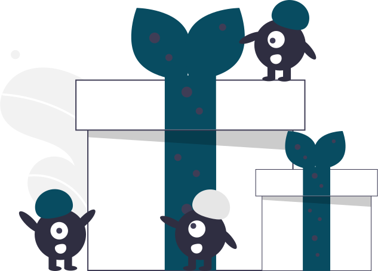

Explore safe cross chain, decentralized finance with,
Cartic Finance!
Swap, Earn, Farm combined into one
DeFi App,
With Increased Earning Percentages.
Why Cartic?
Cartic Finance is a community driven DeFi DApp that gives its users high farming rewards and higher
APYs. Its improved
AMM also gives its users freedom to swap, provide liquidity and also migrate liquidity from other
protocols. Cartic also
aims to further the DeFi space by enabling cross chain interaction by two different networks. Cartic
Finance is built on the binance smart chain given the effective scalability of the network, the
ethereum network will
be given access to the Cartic platform by bridging the two blockchain networks. For more information,
check our
whitepaper.
Apex AMM
On the Binance Smart Chain
Automated market makers are decentralized protocols that rely on simple or complex mathematical
formula price assets
instead of the order books used by old exchanges. The AMM prices the asset in an algorithmic
method. AMMs are amazing,
it made the creating of markets seamlessly easy that literally anyone can create a market by
providing proper liquidity
to a liquidity pool. AMMs also have limits and disadvantages to investments, the impermanence
phenomenon which is the
main disadvantage with AMMs has been greatly minimized by the cartic dev team by the use of
specific formulas on every
step of the transaction, these formulas will be fully outlined when the hypodepositry goes live
on the V2. This will
give our users a great deal of protection when using the cartic protocol, this new development
entails proper
calculations of the different entities that interact during AMM transaction, from the liquidity
providers to the
liquidity itself, this will make investments on non-stable coins much profitable.
Increased Rewards
For Yield farming and Staking
High returns on yields and staking rewards are inevitable with the use of the AMM protocol
created on cartic finance.
The higher you stake, the higher your rewards, linking this to the protocol will lead to
rewards on exponential growth.

Cross-Pool
Liquidity Management
The main problem of AMMs is liquidity. How can one make sure there’s enough liquidity on each
pool in
different blockchains,
at the same time keeping the effect of these liquidity movement minimal on a very large scale? A
cross-chain bridge is a
mechanism for swapping assets from their native blockchain to a token in a secondary blockchain.
This of course aids
flexibility of the entire ecosystem to effortlessly deal with problems of technicality when an
exchange listing occurs
or new use cases being implemented by the developers outside the primary function of the token.
The cartic solution to
this problem of liquidity is by creation of different APIs for the interoperability on different
blockchains and assets.
The algorithmic approach came with a variety scales of tro and fro, FIFO and POS consensus
algorithm, the developers on
cartic pursued the context of blockchain interoperability starting by creating different pools
and asset configuration
which will give the cartic AMM protocol the adequate variable to interact with different pools
on a decentralized
level.